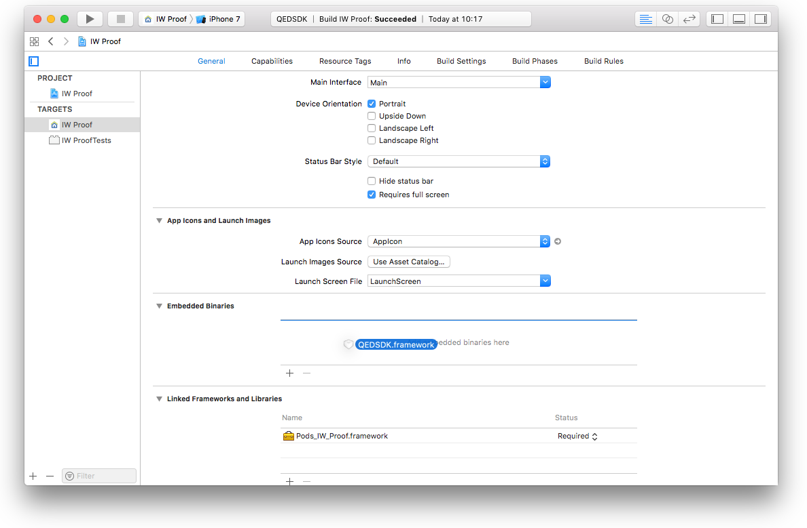
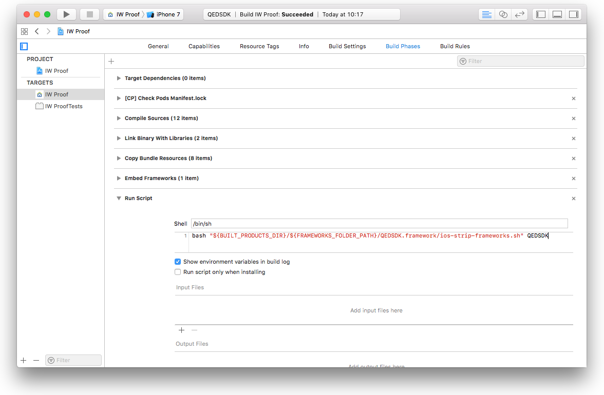
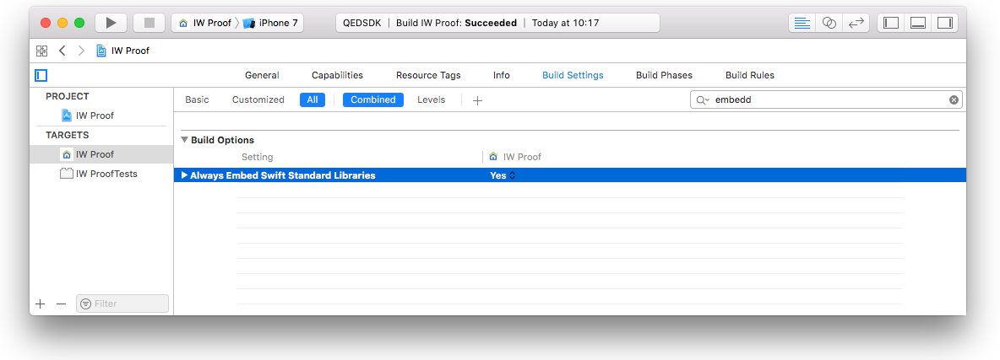

QEDSDK Reference
QEDSDK Reference
QEDSDK Documentation for IOS
The IOS QEDSDK provides a set of convenience instance types aimed to ease and shorten the development time for the usage of the QED REST API.
The main type is the QEDAPI class, which is a wrapper over the functionality of the QED REST API.
The QEDFile defines the representation of a data file to be reported to and notarized by the QED REST API.
The QEDReport defines a representation of a group of QEDFiles that want to be joinly notarized as a common report. The QEDAPI class receives and returns report
representations using the QEDReport struct.
Two more convenience types are provided which are optional to use:
- The
QEDModelprovides a set of convenience methods to aid on persisting and retrieving a data model to/from local storage. - The
QEDMediaCaptureAndPlayViewControllerprovides in a simple interface, the necessary functionality to play and capture videos and photos. You can use this view controller out of the box if your application is meant for media capturing for notarization.
Getting Started
Add the SDK to your project
Cocoa Pods
To integrate QEDSDK for iOS into your Xcode project using CocoaPods, specify it in your
Podfile:source 'https://github.com/CocoaPods/Specs.git' platform :ios, '10.0' use_frameworks! target 'YOUR_APPLICATION_TARGET_NAME_HERE' do pod 'QEDSDK' endThen, run the following command:
$ pod install
Manually
Drag QEDSDK.framework to the Embedded Binaries section in the General tap of your project’s main target. Check Copy items if needed and choose to Create groups. 
Add a new Run Script Phase in your target’s Build Phases.
IMPORTANT: Make sure this Run Script Phase is below the Embed Frameworks build phase. You can drag and drop build phases to rearrange them.
Paste the following line in this Run Script Phase’s script text field:
bash "${BUILT_PRODUCTS_DIR}/${FRAMEWORKS_FOLDER_PATH}/QEDSDK.framework/ios-strip-frameworks.sh" QEDSDK
(Ignore if your project is a Swift only project) - Set the Always Embed Swift Standard Libraries setting in your targets Build Settings to YES

Get your API Key
In order to use the QEDSDK, you must obtain an API Key. Please get in contact: mail@qed.digital.
Quick Launch
Open your AppDelegate file and import the QEDSDK.
import QEDSDKCopy the lines below and paste them into your AppDelegate’s
application(_:didFinishLaunchingWithOptions:)methodQEDAPI.setup(with: "YOUR_API_KEY")Prepare a
QEDFilerepresenting a local data file to be reported and notarized. Create aQEDFileinstance. You can instantiate with the name and extension of a file that you have locally stored on theQEDFile.qedDirectoryroot url.var file = QEDFile(name: "FILE_NAME", extension: "FILE_EXTENSION", dateTaken: Date())!Prepare a
QEDReportrepresenting a group of files to be reported and notarized. Create aQEDReportinstance. You can instantiate with the name and add the files associated with the report.var report = QEDReport(name: "REPORT_NAME")! report.files = [file]Calculate the SHA256 hash of the report if not done yet.
report = report.withCalculatedHash()Using the
QEDAPIclass methods to interact with the QED REST API server, issue a report to the backend for notarizationQEDAPI.send(report) { (updatedReport, error) in // Make sure to perform UI update related actions on main thread DispatchQueue.main.async { guard error == nil else { // Handle reporting errors. The `error` instance will // include detailed information. return } // Handle success. Update your data source and UI accordingly. // `updatedReport` contains a copy of `report` with an updated `proofStatus` } }You can check periodically for status updates until report is
QEDReport.ProofStatus.confirmedQEDAPI.update(report) { (updatedReport, error) in // Make sure to perform UI update related actions on main thread DispatchQueue.main.async { guard error == nil else { // Handle reporting errors. The `error` instance will // include detailed information. return } // Handle success. Update your data source and UI accordingly. // `updatedReport` contains a copy of `report` with an updated // `proofStatus` } }Once the
QEDReportstatus isQEDReport.ProofStatus.confirmed, you can request a PDF certificate from backendQEDAPI.generatePDF(for: report) { (success, error) in // Make sure to perform UI update related actions on main thread DispatchQueue.main.async { guard success, error == nil else { // Handle pdf generation errors. The `error` instance will // include detailed information. return } // Handle success. Update your data source and UI accordingly. // The PDF proof document is now stored in the `pdfURL` of // the requested `report` } }